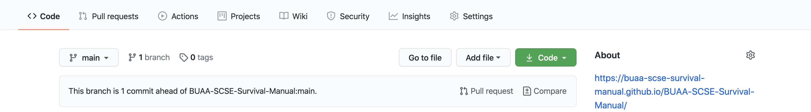

github + PR
STEP.1 install node.js
为了在本地编辑的时候，能够看到编辑后的效果，需要安装node.js
STEP.2 install gitbook-cli
npm install -g gitbook-cli
STEP.3 fork repo
3.1 fork repo
https://github.com/BUAA-SCSE-Survival-Manual/BUAA-SCSE-Survival-Manual
fork这个repo到自己的github账户，加入自己的repo名为xxx
3.2 clone repo
clone仓库到本地
git clone xxx
STEP.4 edit & render
编辑后，查看效果
gitbook serve
实时编辑，实时渲染
STEP.5 commit & create Pull Request
修改后，git add , git commit, git push 三部曲到自己的repo，会看到可以提交PR的提示

点击，按照提示填写信息即可。
Attention
目前Pages连接到的文件夹是main分支的docs, 所以如果想直接修改Pages页面的话，就需要
gitbook build <文档所在的目录, 这里可以为当前目录 "." > docs然后正常推送PR就好了。
当然，直接加入这个organization 就更加简单粗暴了。